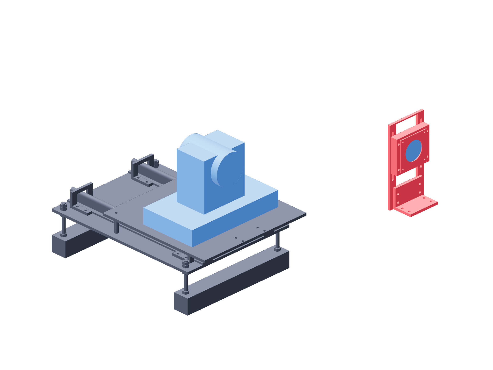

Observation / startup151 / 179
Start the PTZ with its path clear
Remove the entire lens module before every startup. The PTZ startup sweep needs the angle, upright, cassette and retainer outside its path.
AddNo new parts
Tools / setupLens module removed · camera power / USB · manual optics controls

- Remove and set aside the whole angle/upright/cassette/retainer module.
- Start both cameras with clear head travel and identify each physical view by its native camera identity.
- Park pan and tilt at the level forward measurement orientation. Fix zoom, manual focus and exposure.
- Reinstall the complete lens module after parking; bring its cassette coaxial without commanding another head sweep.
Ready when
Startup completes without contact and the parked camera remains level with fixed manual optics settings. A restart or PTZ movement changes the datum and can collide with the stand. Remove the module, re-park and recalibrate before measurement.